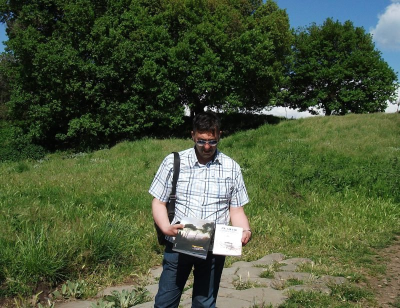

Chi sonoAbout
Interessi di ricercaResearch interests
Sul campoIn the field
Lo studio del turismo lento non si fa solo a tavolino: cammini, siti archeologici e paesaggi sono il laboratorio all'aperto in cui guide, mappe e dati vengono verificati sul posto.
Slow tourism is not studied only at a desk: trails, archaeological sites and landscapes are the open-air laboratory where guidebooks, maps and data are checked on site.

Parco archeologico del Tuscolo, Monte Porzio Catone (RM), 2018 Comparing historical guidebooks with the actual route on site: the ancient paving as a primary source.
Tusculum Archaeological Park, Monte Porzio Catone (Rome), 2018
Villa dei Quintili, Roma, 2022 Map in hand in front of the ruins: the visitor's experience is the starting point for the geocruscotti.
Villa of the Quintilii, Rome, 2022
Laboratori di progettoProject labs
Le linee di lavoro del laboratorio: prototipi, webapp e modelli applicati ai territori. The lab's lines of work: prototypes, web apps and models applied to territories.
DidatticaTeaching
ContattiContact
Dipartimento di Ingegneria dell'Impresa, Università degli Studi di Roma "Tor Vergata"
Department of Enterprise Engineering, University of Rome "Tor Vergata"
Via del Politecnico 1, 00133 Roma · angelaccio@dii.uniroma2.it · ORCID 0000-0002-8644-3472